1. Versuch
N. Trometer et al., International Journal of Metalcasting 18 (2024) 69. Eine gedruckte Form mit Deckel aus Polycarbonat: Hohlraum 100 × 100 × 5 mm mit Ecken R10 und einer Insel 40 × 60 mm, Anschnitt 30 mm, Überlauf 100 × 30 mm. Der Kolben (Ø 25,4 mm) schießt mit 1,75 m/s in einem Zug; die Form steht unter 1 bar, 200 oder 100 mbar. Gefilmt mit 1000 Bildern je Sekunde.
Der Füllgrad der Kammer ist nicht angegeben, ebenso wenig die Zeiten der Fotos. Die Fotos sind daher über den Füllstand des Hohlraums der Rechnung zugeordnet.
2. Modell
Die Platte mit Pressrest, Anschnitt, Hohlraum und Überlauf, dahinter 20 mm der Kammer; zur Zeit null ist die Kammer voll, das Wasser tritt mit der Kolbengeschwindigkeit ein. Das Vakuum ist der Druck der Luft in der Form und im Tank am Anschluss der Vakuumleitung.
Gießkammer und Anfangszustand. Den Anschluss der Gießkammer beschreibt die Quelle nicht im
Text, die Fotos zeigen ihn (Abb. 1, 2a, 6 und 8): Die Gießkammer ist ein waagerechtes Plexiglasrohr (Ø25,4
innen, 280 mm lang) vor der Form, auf der Seite der Deckplatte und der Kamera; ihre Achse steht senkrecht zur
Platte und geht durch den Kreis Ø32, der zum Außendurchmesser des Rohrs passt. Die Form steht senkrecht, die
Vakuumleitung sitzt ebenfalls auf der Deckplatte. In das waagerechte Rohr gegossen steht das Wasser in
Gießkammer, Pressrest und Anschnitt auf einer Höhe, denn alle drei sind verbunden. Die Grundeinstellung füllt
zu Beginn nur die Kammer, der Pressrest daneben ist leer: Das Wasser steht als senkrechte Wand an der Form.
So kann es nicht stehen; das ist ein Fehler des Modells (01.10.), ebenso in den Varianten
sleeve_phi* mit ganzer Gießkammer. Die Varianten hydro_* beginnen in Ruhe mit einem
Wasserspiegel in Kammer, Pressrest und Anschnitt und mit der Entlüftung auf der Seite der Kammer.
Entscheidung (02.10.): Die vier Stufen beginnen in Ruhe wie hydro_base: das
Kammerstück voll, der Pressrest bis zum Wasserspiegel einer zu 60 % gefüllten Gießkammer, die Entlüftung auf der
Seite der Kammer und der Deckplatte. Den Füllgrad nennt die Quelle nicht; 60 % liegt über den 41 %, die Form und
Überlauf mindestens brauchen. Die ganze Gießkammer mit bewegtem Kolben trifft den Anfang der Füllung schlechter
(Abschnitt 4) und bleibt eine Variante. Die Rechnungen bis 01.10. stehen als wall30_* in der
Tabelle.
3. Ergebnisse
| Rechnung | Einstellung | Anfang: IoU Wasser | Anfang: IoU Luft | Mitte: IoU Wasser | Mitte: IoU Luft | Ende: IoU Wasser | Ende: IoU Luft |
|---|---|---|---|---|---|---|---|
vac100mbar | Grundeinstellung: in Ruhe, Pressrest bis zum Wasserspiegel gefüllt (seit 02.10.) | 0,19 | 0,95 (1,00) | 0,68 | 0,15 (0,66) | 0,86 | 0,00 (0,00) |
vac1bar | Grundeinstellung: in Ruhe, Pressrest bis zum Wasserspiegel gefüllt (seit 02.10.) | 0,19 | 0,93 (1,00) | 0,69 | 0,47 (0,88) | 0,88 | 0,11 (0,64) |
vac200mbar | Grundeinstellung: in Ruhe, Pressrest bis zum Wasserspiegel gefüllt (seit 02.10.) | 0,44 | 0,85 (0,97) | 0,73 | 0,06 (0,52) | 0,96 | 0,06 (0,32) |
vac265mbar | Grundeinstellung: in Ruhe, Pressrest bis zum Wasserspiegel gefüllt (seit 02.10.) | 0,46 | 0,86 (0,97) | 0,70 | 0,05 (0,32) | 0,96 | 0,01 (0,34) |
biscuit10 | Pressrest 10 statt 5 mm tief (5 mm hinter die Platte) | 0,38 | 0,83 (0,97) | 0,70 | 0,04 (0,34) | 0,96 | 0,00 (0,03) |
gate_fan | fan gate of constant section: taper 5 -> 2 mm, land 2 mm deep (cover side), 0.5 mm across the plate | 0,30 | 0,78 (0,96) | 0,72 | 0,06 (0,47) | 0,96 | 0,00 (0,06) |
gate_fan3 | gate thinner than the plate: taper 5 -> 3 mm, land 3 mm deep (cover side), 0.5 mm across the plate | 0,35 | 0,81 (0,96) | 0,71 | 0,05 (0,28) | 0,96 | 0,00 (0,12) |
gate_ref05 | Ende der Kammer, Pressrest, Engstelle und Anschnitt mit 0,5 mm | 0,36 | 0,82 (0,95) | 0,72 | 0,09 (0,47) | 0,96 | 0,05 (0,17) |
gate_shallow | gate thinner than the plate: taper 5 -> 2.5 mm, land 2.5 mm deep (cover side), 0.5 mm across the plate | 0,35 | 0,81 (0,96) | 0,71 | 0,05 (0,34) | 0,96 | 0,00 (0,20) |
hydro_base | Zufluss wie die Grundeinstellung, aber zu Beginn in Ruhe: Pressrest bis zum Wasserspiegel einer zu 60 % gefüllten Kammer voll, Entlüftung auf der Kammerseite | 0,47 | 0,87 (0,97) | 0,71 | 0,03 (0,34) | 0,96 | 0,00 (0,02) |
hydro_phi050 | ganze Kammer Ø25,4 × 280 mm, 50 % gefüllt, zu Beginn in Ruhe mit einem Wasserspiegel in Kammer und Pressrest, Entlüftung auf der Kammerseite, Kolben aus der Ruhe auf 1,75 m/s | 0,34 | 0,81 (0,95) | 0,72 | 0,06 (0,35) | 0,94 | 0,05 (0,33) |
hydro_phi060 | ganze Kammer Ø25,4 × 280 mm, 60 % gefüllt, zu Beginn in Ruhe mit einem Wasserspiegel in Kammer und Pressrest, Entlüftung auf der Kammerseite, Kolben aus der Ruhe auf 1,75 m/s | 0,37 | 0,83 (0,96) | 0,71 | 0,08 (0,50) | 0,96 | 0,00 (0,21) |
hz05 | 10 statt 5 Zellen über die Dicke | 0,38 | 0,84 (0,97) | 0,70 | 0,04 (0,48) | 0,96 | 0,02 (0,32) |
hz05_100mbar | 10 statt 5 Zellen über die Dicke (100 mbar) | 0,20 | 0,95 (1,00) | 0,69 | 0,15 (0,56) | 0,86 | 0,00 (0,00) |
hz05_1bar | 10 statt 5 Zellen über die Dicke (1 bar) | 0,16 | 0,93 (1,00) | 0,62 | 0,42 (0,85) | 0,88 | 0,07 (0,52) |
neck13 | Engstelle 13 statt 10,7 mm breit (oberes Ende der Messung) | 0,39 | 0,83 (0,97) | 0,70 | 0,05 (0,39) | 0,96 | 0,04 (0,24) |
rke | RANS realizable k-epsilon, wall functions (inlet as sst) | 0,39 | 0,83 (0,97) | 0,71 | 0,10 (0,61) | 0,94 | 0,01 (0,09) |
sleeve_phi050 | ganze Kammer Ø25,4 × 280 mm, 50 % gefüllt, Kolben aus der Ruhe auf 1,75 m/s (bewegtes Netz); Pressrest zu Beginn leer neben dem Wasser der Kammer, ein Fehler | 0,38 | 0,84 (0,97) | 0,72 | 0,07 (0,47) | 0,95 | 0,02 (0,23) |
sleeve_phi060 | ganze Kammer Ø25,4 × 280 mm, 60 % gefüllt, Kolben aus der Ruhe auf 1,75 m/s (bewegtes Netz); Pressrest zu Beginn leer neben dem Wasser der Kammer, ein Fehler | 0,38 | 0,83 (0,96) | 0,70 | 0,05 (0,34) | 0,95 | 0,00 (0,08) |
sst | RANS k-omega SST, Wandfunktionen | 0,41 | 0,84 (0,96) | 0,71 | 0,05 (0,30) | 0,95 | 0,03 (0,13) |
wall30_vac100mbar | Grundeinstellung bis 01.10.: Pressrest leer neben der vollen Kammer (neue Rechnung folgt) | 0,19 | 0,95 (1,00) | 0,67 | 0,14 (0,56) | 0,86 | 0,00 (0,00) |
wall30_vac1bar | Grundeinstellung bis 01.10.: Pressrest leer neben der vollen Kammer (neue Rechnung folgt) | 0,17 | 0,93 (1,00) | 0,63 | 0,48 (0,88) | 0,88 | 0,12 (0,61) |
wall30_vac200mbar | Grundeinstellung bis 01.10.: Pressrest leer neben der vollen Kammer (neue Rechnung folgt) | 0,45 | 0,85 (0,97) | 0,71 | 0,10 (0,52) | 0,96 | 0,00 (0,07) |
wall30_vac265mbar | Grundeinstellung bis 01.10.: Pressrest leer neben der vollen Kammer (neue Rechnung folgt) | 0,47 | 0,87 (0,97) | 0,69 | 0,04 (0,24) | 0,96 | 0,03 (0,23) |
Fotos und Rechnung sind über den Füllstand des Hohlraums zugeordnet. IoU Luft vergleicht die trockenen Flächen im Hohlraum, also die Lage der Luftnester; in Klammern mit 5 mm Toleranz: eine trockene Stelle zählt als getroffen, wenn die andere Seite innerhalb von 5 mm auch eine hat.
3.1 Videos der Rechnungen
Jedes Video zeigt die Rechnung auf der Ebene des Modells, in derselben Ansicht und denselben Farben wie die Vergleiche mit den Fotos: Wasseranteil der Plattendicke, Füllfront (Linie), nasse Front (gestrichelt) und eingeschlossene Luft (orange). Die Videos laden erst beim Abspielen.
Bei den vier Stufen steht rechts daneben im selben Maßstab ein Schnitt durch die Achse der Gießkammer: links der Kolben, dann das 20 mm lange Stück der Gießkammer (Ø25,4), rechts der 5 mm dicke Streifen der Platte mit dem Pressrest (Ø32); Wasseranteil je Zelle, Linie bei 0,5. Zu Beginn ist das Stück der Gießkammer voll und der Pressrest daneben leer; so kann das Wasser nicht stehen (Abschnitt 2). Die Gießkammer bleibt die ganze Rechnung über voll (mindestens 99,9 %); der Strahl aus der Kammer füllt den Pressrest in 4,5 ms zu 95 %, kleine Lücken an seinem Rand (2 %) bleiben länger.
Grundeinstellung
vac1barvac265mbarvac200mbarvac100mbarVarianten
biscuit10: Pressrest 10 statt 5 mm tief (5 mm hinter die Platte)gate_ref05: Ende der Kammer, Pressrest, Engstelle und Anschnitt mit 0,5 mmhz05: 10 statt 5 Zellen über die Dickehz05_100mbar: 10 statt 5 Zellen über die Dicke (100 mbar)hz05_1bar: 10 statt 5 Zellen über die Dicke (1 bar)neck13: Engstelle 13 statt 10,7 mm breit (oberes Ende der Messung)rke: sst: RANS k-omega SST, WandfunktionenVarianten mit Schnitt durch die Kammer
gate_fan: gate_fan3: gate_shallow: hydro_base: Zufluss wie die Grundeinstellung, aber zu Beginn in Ruhe: Pressrest bis zum Wasserspiegel einer zu 60 % gefüllten Kammer voll, Entlüftung auf der Kammerseitewall30_vac100mbar: Grundeinstellung bis 01.10.: Pressrest zu Beginn leer neben der vollen Kammer, das Wasser als Wand an der Formwall30_vac1bar: Grundeinstellung bis 01.10.: Pressrest zu Beginn leer neben der vollen Kammer, das Wasser als Wand an der Formwall30_vac200mbar: Grundeinstellung bis 01.10.: Pressrest zu Beginn leer neben der vollen Kammer, das Wasser als Wand an der Formwall30_vac265mbar: Grundeinstellung bis 01.10.: Pressrest zu Beginn leer neben der vollen Kammer, das Wasser als Wand an der FormVarianten mit ganzer Gießkammer, Schnitt durch die Kammer
hydro_phi060: ganze Kammer Ø25,4 × 280 mm, 60 % gefüllt, zu Beginn in Ruhe mit einem Wasserspiegel in Kammer und Pressrest, Entlüftung auf der Kammerseite, Kolben aus der Ruhe auf 1,75 m/ssleeve_phi050: ganze Kammer Ø25,4 × 280 mm, 50 % gefüllt, Kolben aus der Ruhe auf 1,75 m/s (bewegtes Netz); Pressrest zu Beginn leer neben dem Wasser der Kammer, ein Fehlersleeve_phi060: ganze Kammer Ø25,4 × 280 mm, 60 % gefüllt, Kolben aus der Ruhe auf 1,75 m/s (bewegtes Netz); Pressrest zu Beginn leer neben dem Wasser der Kammer, ein Fehler3.2 Foto, Auswertung und Rechnung
Jedes Bild zeigt nebeneinander das Foto der Quelle, seine Auswertung und die Rechnung, alle drei auf der Ebene des Modells und damit in genau derselben Ansicht. Das Foto ist über die Lage in der Form entzerrt; die Auswertung ist der Anteil der Plattendicke, den das Wasser füllt (Abschnitt Vom Foto zum Feld); die Rechnung ist derselbe Anteil aus dem gerechneten Feld, beim selben Füllstand des Hohlraums (die Quelle gibt keine Zeiten an). Auswertung und Rechnung tragen dieselben Markierungen: die Füllfront (Anteil 0,5, Linie), die nasse Front (0,1, gestrichelt) und die eingeschlossene Luft (orange: trockene Stellen, die keine Verbindung zur Oberkante des Hohlraums haben). In der Rechnung steht punktiert zusätzlich die Füllfront des Fotos. Was das Foto nicht zeigen kann, ist grau und wird nicht bewertet; die Rechnung zeigt dort ihr Feld hell und gestrichelt umrandet. Die Rechnungen der Autoren werden nicht gezeigt.
Verdeckt ist der Anschluss der Vakuumleitung vor der Mitte des Überlaufs.
vac1bar: 1 bar (Abb. 8)
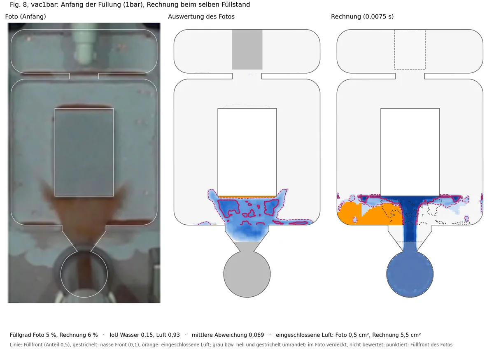
vac1bar: Foto, seine Auswertung und die Rechnung in derselben Ansicht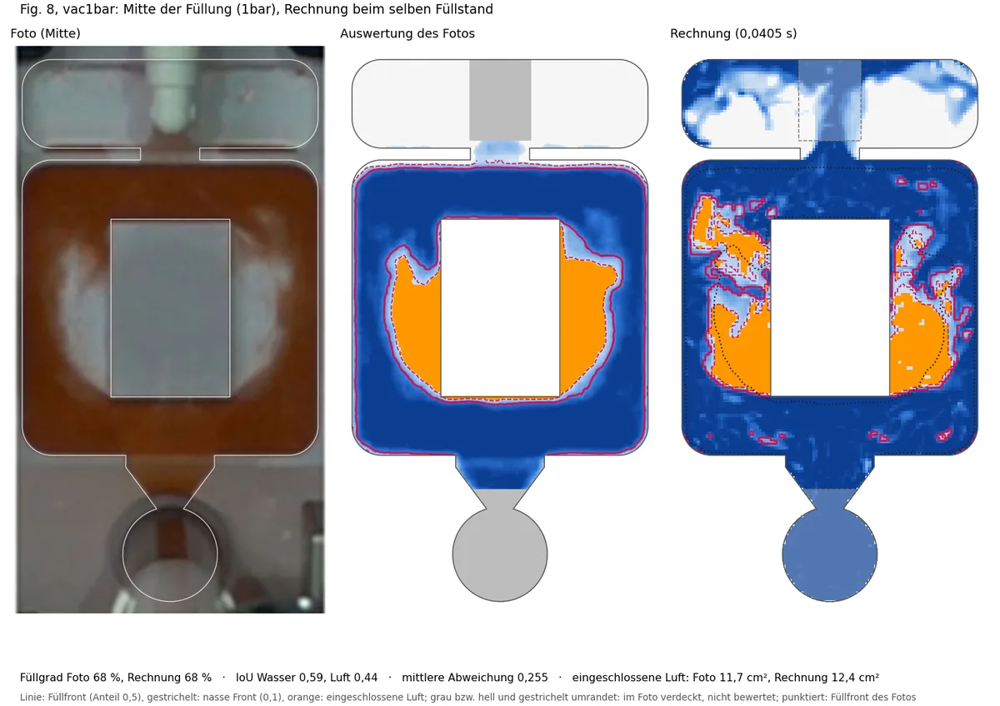
vac1bar: Foto, seine Auswertung und die Rechnung in derselben Ansicht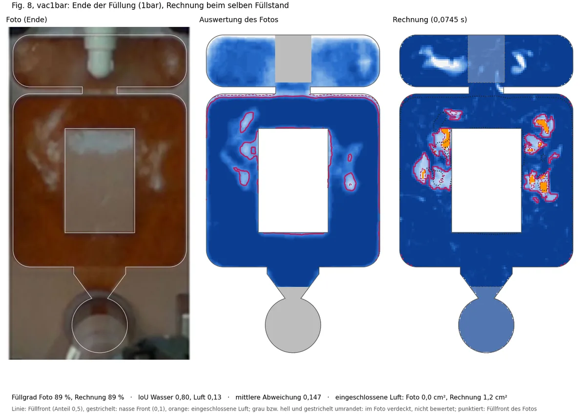
vac1bar: Foto, seine Auswertung und die Rechnung in derselben Ansichtvac200mbar: 200 mbar (Abb. 6, Lauf 1, und Abb. 8)
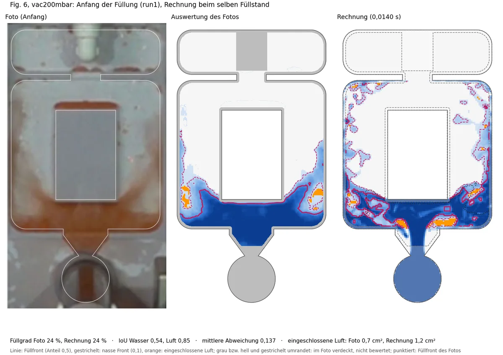
vac200mbar: Foto, seine Auswertung und die Rechnung in derselben Ansicht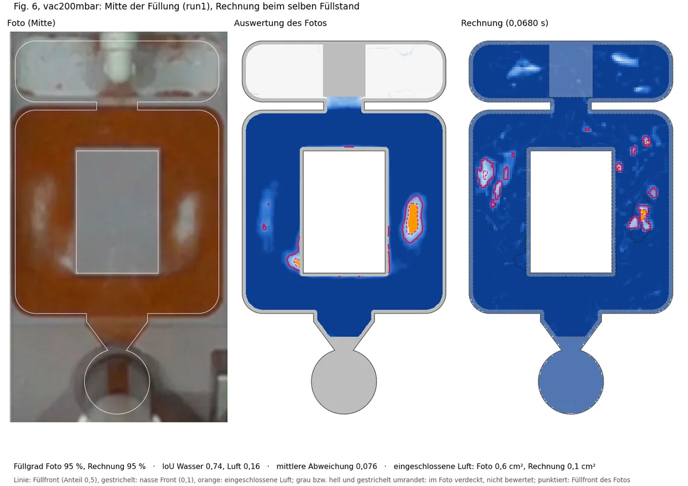
vac200mbar: Foto, seine Auswertung und die Rechnung in derselben Ansicht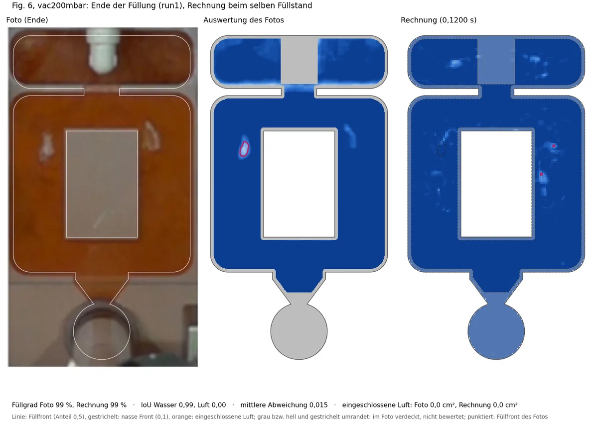
vac200mbar: Foto, seine Auswertung und die Rechnung in derselben Ansicht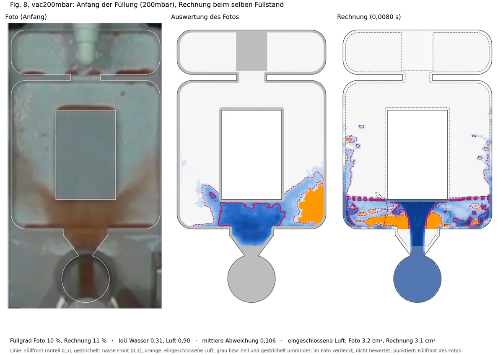
vac200mbar: Foto, seine Auswertung und die Rechnung in derselben Ansicht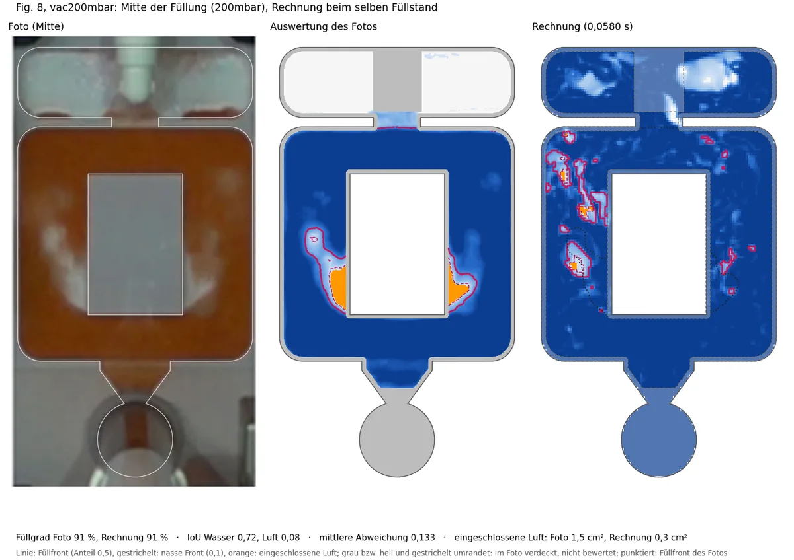
vac200mbar: Foto, seine Auswertung und die Rechnung in derselben Ansicht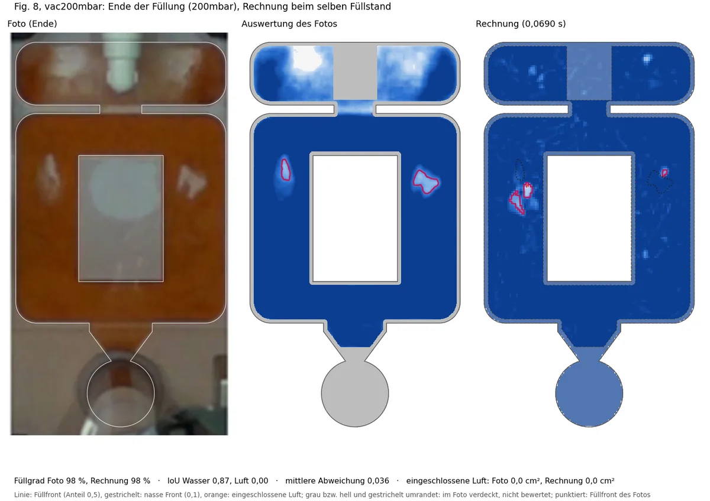
vac200mbar: Foto, seine Auswertung und die Rechnung in derselben Ansichtvac100mbar: 100 mbar (Abb. 8)
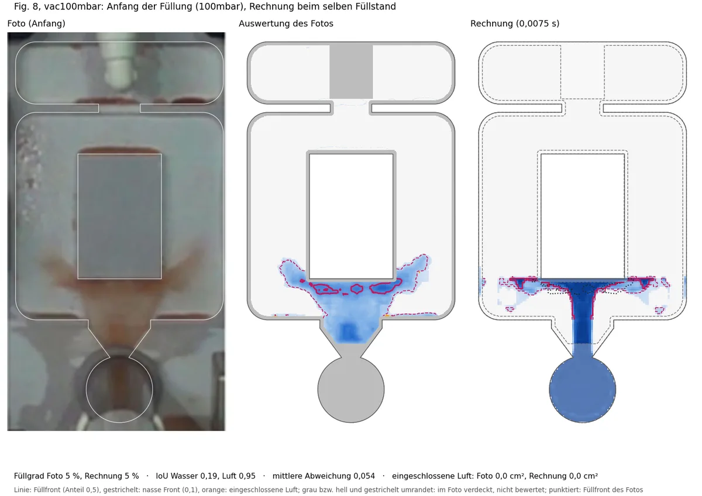
vac100mbar: Foto, seine Auswertung und die Rechnung in derselben Ansicht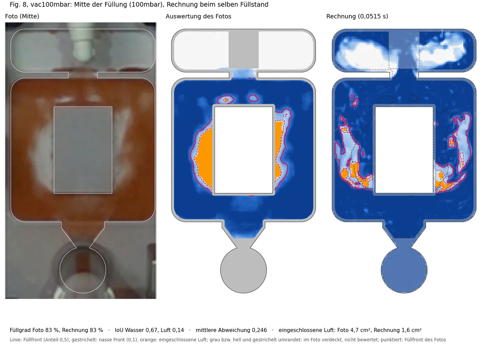
vac100mbar: Foto, seine Auswertung und die Rechnung in derselben Ansicht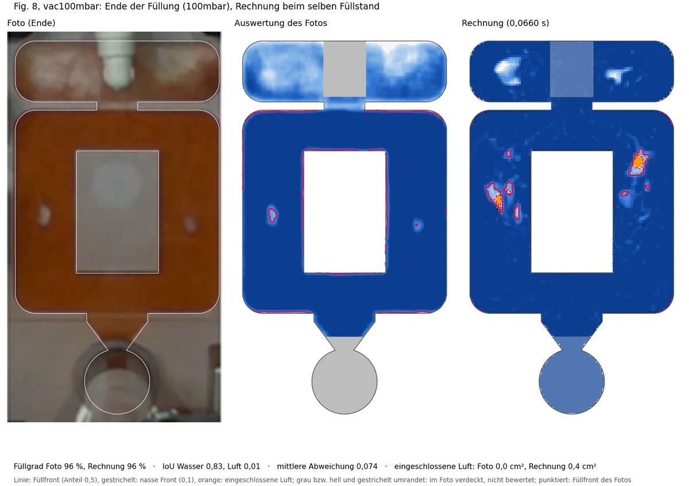
vac100mbar: Foto, seine Auswertung und die Rechnung in derselben Ansicht4. Abstimmung
Die Rechnung trifft den Füllstand und die Menge der Luft: bei halb vollem Hohlraum sind im Foto 519 mm² trocken, in der Rechnung 462 mm². Sie liegen aber an anderer Stelle. Im Versuch bleiben die Luftnester an den oberen Ecken der Insel, seitlich neben ihr; in der Rechnung verteilen sie sich unterhalb der Insel. Die trockene Fläche deckt sich daher kaum (IoU der Luft 0,05 in der Mitte, 0,02 am Ende), die nasse gut (0,62 und 0,85).
sleeve_phi060: die ganze Gießkammer (280 mm, Ø 25,4 mm) mit bewegtem Kolben (shotSleeve-Netzbewegung, 10 ms Anlauf auf 1,75 m/s), 60 % Füllgrad. Das Wasser kommt als Welle aus der Kammer statt als voller Strahl. Ergebnis gleich der Grundeinstellung (Anfang 0,24, Mitte 0,62, Ende 0,85): der Einlauf ist nicht die Ursache. Mit 50 % Füllgrad ebenso (0,27, 0,64, 0,85); der Füllgrad der Kammer spielt für den Hohlraum keine Rolle, die Variante mit 70 % wurde daher abgebrochen.hydro_base,hydro_phi060(01.10.): derselbe Zufluss bzw. die ganze Gießkammer mit 60 %, aber zu Beginn in Ruhe: ein Wasserspiegel in Kammer, Pressrest und Anschnitt, die Entlüftung auf der Seite der Kammer (Abschnitt 2). Bei der Grundeinstellung ändert das wenig: Wasser IoU 0,47, 0,71 und 0,96 (Grundeinstellung 0,45, 0,71, 0,96), Luftnester mit 5 mm Toleranz in der Mitte 0,34 statt 0,52. Mit ganzer Gießkammer liegt der Anfang weiter weg (Wasser IoU 0,37), Mitte und Ende gleich (0,71, 0,96), die Luftnester mit Toleranz in der Mitte 0,50, am Ende 0,21 (Grundeinstellung 0,07). Im Foto läuft das Wasser am Anfang als Fächer schräg an beiden Seiten der Insel hoch, der Anschnitt ist über seine ganze Breite nass; in allen Rechnungen löst sich der Strahl von den schrägen Wänden des Anschnitts, schießt gerade gegen die Insel und läuft dort waagerecht nach außen. Mit 50 % Füllgrad (hydro_phi050) liegt der Anfang noch weiter weg (0,34), die Luftnester am Ende treffen mit Toleranz am besten (0,33).gate_fan(02.10.): Tiefe des Anschnitts. Die Quelle nennt sie nicht; in Abb. 4 (Lauf und Anschnitt der verkleinerten Probenform derselben Autoren) wird der Lauf in der Tiefe von 6,0 auf etwa 3,2 mm dünner, und in den Fotos der vollen Form absorbiert der Steg des Anschnitts nur 0,4 bis 0,6, der verjüngte Teil 0,6 bis 0,8 so viel Licht wie der 5 mm tiefe Hohlraum. Als Fächeranschnitt gleichen Querschnitts (verjüngter Teil 5 auf 2 mm, Steg 2 mm, 0,5 mm Zellen über die Dicke) füllt das Wasser den Anschnitt über die ganze Breite und läuft bei 10 % Füllung wie im Foto schräg an beiden Seiten der Insel hoch (Abb. 8b: mittlere Abweichung 0,075 statt 0,106). Bei 24 % läuft aber zu viel Wasser als Film an den Seiten nach oben, und unter der Insel fehlt das dicke Wasser (Abb. 6a bis c: Wasser IoU 0,27 bis 0,30 statt 0,43 bis 0,54); Mitte und Ende gleich. Mit 2,5 mm tiefem Steg (gate_shallow) liegt es dazwischen: bei 10 % wie die Grundeinstellung (0,103), bei 24 % Wasser IoU 0,34 bis 0,41. Je flacher der Anschnitt, desto mehr verteilt sich das Wasser als Fächer; keine der Tiefen trifft beide Anfangsfotos zugleich. Mit 3 mm (gate_fan3) wie mit 2,5 mm. Der faire Vergleich isthz05, derselbe 5 mm tiefe Anschnitt mit denselben 0,5 mm Zellen über die Dicke: Abb. 8b bei 10 % Wasser IoU 0,24 (5 mm), 0,31 (3 mm), 0,30 (2,5 mm), 0,34 (2 mm); Abb. 6a bis c bei 24 % 0,41 bis 0,44, 0,35 bis 0,38, 0,34 bis 0,41 und 0,27 bis 0,30. Der flachere Anschnitt bringt den ersten Einlauf näher und den späteren weiter weg; insgesamt kommt keine Tiefe näher als die Grundeinstellung (Wasser IoU 0,661 bis 0,674 gegen 0,681 beihz05und 0,707 bei der Grundeinstellung mit 5 Zellen). Die Grundeinstellung behält den 5 mm tiefen Anschnitt; die Tiefe bleibt ein offener Punkt der Quelle.rke(04.10.): das realisierbare k-ε, das bei Niida die Luft und die Fotos nach dem Umschalten näher brachte. Hier ohne Gewinn: Wasser IoU 0,39, 0,71 und 0,94 (laminar 0,44, 0,73, 0,96), gesamt 0,679 gegen 0,707; die Luftnester der mittleren Füllung mit Toleranz etwas besser (0,61 statt 0,52). Trometer bleibt laminar.sst: die Grundeinstellung mit RANS k-omega SST, das bei Niida auf dem breiteren Anschnitt Fotos und Luft deutlich näher brachte. Hier ohne Wirkung.gate_ref05: Ende der Kammer, Pressrest, Engstelle und Anschnitt mit 0,5 mm; der Strahl mit 16,6 m/s durch die 10,7 mm breite Engstelle ist bei 1 mm nur 11 × 5 Zellen breit. Ebenfalls ohne Wirkung: Wasser IoU 0,34, 0,68 und 0,92 gegen 0,39, 0,67 und 0,92 der Grundeinstellung (bereinigte Masken).
Befund: Die Füllung der Trometer-Form ist unempfindlich gegen Einlauf, Füllgrad der Kammer,
Turbulenzmodell (SST, realisierbares k-ε), feines Netz am Anschnitt, Tiefe des Pressrests, Tiefe des Anschnitts
und Breite der Engstelle; keine dieser Varianten kommt insgesamt näher als die Grundeinstellung. Seit 02.10.
beginnt sie in Ruhe, mit einem Wasserspiegel in Kammer und Pressrest (Abschnitt 2); das trifft die Fotos so gut
wie der frühere, falsche Anfangszustand. Ein in der Tiefe verjüngter Anschnitt erzeugt den Fächer des ersten
Einlaufs wie im Foto, verteilt das Wasser danach aber zu stark. Mit den bereinigten Masken (ohne Rückstände früherer Schüsse, ohne den
unscharfen Rand, Abschnitt Vom Foto zum Feld der Methode) trifft die Rechnung den Füllstand gut: Wasser IoU bei
200 mbar 0,44, 0,73 und 0,96 am Anfang, in der Mitte und am Ende, mittlere Abweichung 0,088. Die Luftnester
der mittleren Füllung liegen in Foto und Rechnung in denselben Seitenkanälen neben der Insel; mit 5 mm Toleranz
treffen sie sich zu 52 bis 88 %, pixelgenau nur zu 10 bis 48 %. Offen bleibt das Ende der Füllung: im Versuch
bleiben bei 200 und 100 mbar kleine Nester an den oberen Ecken der Insel (30 bis 70 mm²), die Rechnung füllt
diese Ecken ganz. Einzig die Auflösung über die Dicke wirkt dort: mit 10 statt 5 Zellen (hz05)
behält die Rechnung einen Teil dieser Nester (Treffer mit 5 mm Toleranz am Ende 0,32 statt 0,07), in der Mitte
und am Anfang ist sie etwas weiter weg (0,48 statt 0,52; Wasser IoU 0,38 statt 0,45). Bei den anderen beiden
Drücken wiederholt sich das nicht: bei 1 bar liegt sie mit 10 Zellen weiter weg (am Ende 0,52 statt 0,61,
mittlere Abweichung 0,131 statt 0,115), bei 100 mbar ändert sich nichts (die Ecken bleiben in beiden Fällen
gefüllt). Die Grundeinstellung bleibt bei 5 Zellen über die Dicke.